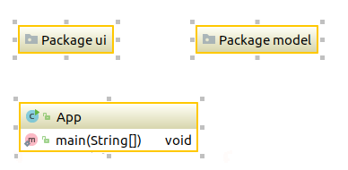
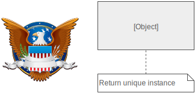

Definicja
Wzorzec projektowy - reużywalna forma rozwiązania zastosowana do danego problemu projektowego
Podział
- prawidłowe wzorce
- antywzorce
- refaktoring
- wzorce wytwarzania kodu
- wzorce projektowania
Wartość
Charakterystyka:
- niezmienna (immutable)
- jeśli równe, to nie odróżniamy
- dla klienta nie jest ważne, którą instancję dostanie
Encja
Przykładowo ORM:
Charakterystyka:
- może się zmieniać w trakcie życia
- pojedyncza instancja lub synchronizacja danych
- jeśli wszystkie pola równe, to i tak mogą być różne referencje
- dla klienta jest ważne , którą instancję dostanie
Zakres
class Range {
private int start;
private int end;
public Range(int start, int end) {
this.start = start;
this.end = end;
}
public boolean contains(int number){
return (number >= start && number <= end);
}
}
//...
new Range(5,22).contains(10*a+b);
Charakterystyka:
- obiekt parametryczny
- jest wartością
- dla klienta nie jest ważne, którą instancję dostanie
MVC, MVVM, MV-Whatever
Singleton
Use case
Gdy chcemy, aby dany obiekt występował tylko raz we wszystkich częściach systemu, a jest to rzecz unikalna. Ale: zmienne globalne to zło!
TDD
- programista pisze test
- widzi, jak go oblewa
- pisze kod, który spełnia test
- jeżeli dalej go oblewa to powrót do punktu 2.
Zapaszki w kodzie
Łańcuchy komunikatów
Ten sposób pozyskiwania danych uzależnia klienta od konkretnej struktury nawigacji. Każda zmiana relacji pomiędzy obiektami wymaga zmiany kodu klienta.
bObj->b()->c()->d()
Zduplikowany kod
Programowanie metodą kopiuj-wklej
Refaktoring
↓
UML
Diagramy:
- interakcji
- obiektów
- ERD
- data flow
`•.,¸¸,.•´¯ ƤЎŤÃŇĮÃ? ¯`•.,¸¸,.•´
Źródła
- Banda Czterech (Gamma et al.), Wzorce projektowe
- Martin Fowler, Refaktoryzacja. Ulepszanie struktury istniejącego kodu
- EvansDomain Driven Design
- Source making - design patterns